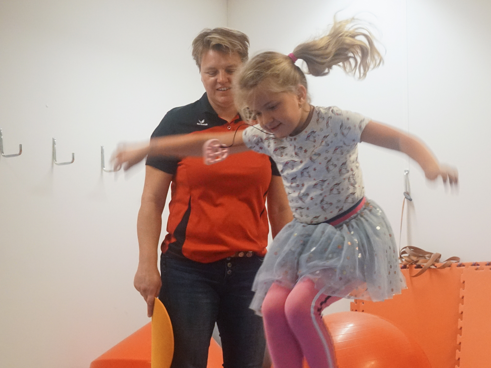

Kinderfysiotherapie
Spelenderwijs ontwikkelen kinderen hun zintuigen en motoriek. Meestal gaat dat goed en bijna ongemerkt. Maar bij sommige kinderen duurt het langer of wijkt dit af van ‘de standaard’. Dit kan kinderen belemmeren in hun ontwikkeling waardoor ze meer oefening nodig hebben om een bepaalde vaardigheid onder de knie te krijgen. Ook kan het zijn dat kinderen door een aandoening of blijvende afwijking optimaal moeten leren bewegen met een beperking. Al deze kinderen kunnen baat hebben bij behandeling door de kinderfysiotherapeut.
Wat is kinderfysiotherapie?
Kinderfysiotherapie kan in iedere fase van de ontwikkeling van een kind in worden gezet. Zo kunnen er bij zuigelingen signalen zijn die wijzen op motorische problemen. Bijvoorbeeld: weinig kracht, overstrekken of moeite met veranderen van houding. Problemen aan de luchtwegen of veel huilen kunnen bij deze kinderen een aanwijzing zijn dat er iets aan de hand is. Daarnaast hebben ook kinderen in de basisschoolleeftijd soms baat bij kinderfysiotherapie. Als gevolg van een bewegingsprobleem of het onvoldoende beschikken over motorische vaardigheden kan er een achterstand ontstaan. Hierdoor kan het volgen van onderwijs of het deelnemen aan fysieke activiteiten passend bij die leeftijd beperkt worden. Dit kan een reden zijn om de deskundigheid van een kinderfysiotherapeut in te roepen.
Door het wekelijkse fysio-feestje van Naomi heeft ze zich motorisch kunnen ontwikkelen tot een speelse jonge dame. Mede door de fysio kan ze ondanks haar beperkingen toch nog steeds meedoen in het reguliere onderwijs. (Naomi Zijta)
De behandelingen bij de kinderfysiotherapeut
De kinderfysiotherapeut wil allereerst een volledig beeld van het motorisch niveau van uw kind krijgen. Zij verzamelt informatie bij ouders, leerkrachten, huisarts en andere betrokkenen over hoe het kind zich onder verschillende omstandigheden gedraagt. Daarnaast onderzoekt zij het kind met behulp van allerlei tests. Vervolgens bespreekt de kinderfysiotherapeut de bevindingen met de ouders en de patiënt en stelt zij een behandelplan op. De behandeling richt zich veelal op de motorische ontwikkelingsmogelijkheden van het kind met als doel dat het kind beter gaat functioneren in zijn leefomgeving. Het oefenmateriaal dat hiervoor gebruikt wordt is speciaal ontwikkeld voor kinderen. Oefenen met deze materialen zal het plezier in bewegen te vergroten en bepaalde motorische functies aanspreken. Als dit nodig is, kan de kinderfysiotherapeut uw kind ook thuis behandelen. Dat kan van pas komen bij kinderen van 0 tot 2 jaar of bij kinderen met een ernstige handicap
Binnen Fysiotherapie de Merk zijn Judith en Nynke Z werkzaam als gespecialiseerd fysiotherapeut.